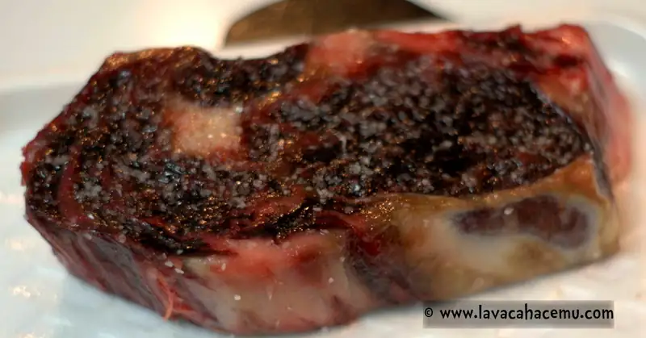

Special occasion dinner
Christmas is special, there's no denying that, but you're expected to do something traditional and do not, do fucking, NOT deviate from the standard and not cook turkey in the traditional-in-an-oven-bag manner or there will be consequences, trust me, I know.... one achiote-marinated bird and your christmas cooking license is revoked for... well, at least 10 years and counting.
{kind=link}
No, don't touch thanksgiving, Christmas or some of the other classics. You can improve them, maybe a side dish here, a side dish there, but don't mess with the bird or the ham. No, those aren't the type of arenas for experimentation this past weekend we crossed a milestone that warranted such food-fuckery: dried/aged ribeye steaks now plated with some blue-feet chanterelles, asparagus and mashed potatoes.
The meat. This is how it looked when we first bought it. Nice marbling, heaps of connective tissue. These were rubbed with fresh garlic (reasoning for this is that garlic is a good anti-microbial and you know... flavor) and then placed in the fridge on makeshift racks with their styrofoam platters and some meat skewers holding them elevated.
{kind=link}
After a week, they dried out, but no rot or spoilage. I read somewhere that for small pieces of meat there's no benefit for dry-aging at home and that the meat picks up nasty tastes and odors from the fridge. Ok, if there's something that's a magnet for odors it's going to be fat, especially the fat on the surface of the meat, so I trimmed 1~3 mm from the fat deposits in the steak.
{kind=link}
The wine. Every good steak deserves a decent wine and while I usually take the Kimmi Raikkonen approach to choosing wines, I asked the guy at the wine place to recommend something and a 2010 Grand Cru St. Emilion at a decent price is not too shabby. If pressed though, I would have gone with a Russian River Valley pinot noir, but ok, french it is.
{kind=link}
The carbs. If your'e a carnivore you really, really shouldn't miss out on some good ole fashioned gluten and carbs, nice sweet, puffy carbs, yes, the fleishman's recipe for classic dinner roles didn't disappoint.
{kind=link}
Here's the meat getting the spa treatment with some masage oil in the form of sunflower seed oil (any high-smoking point oil will do) and a nice kosher salt scrub.

{kind=link}
Didn't I tell you that the dinner roll recipe didn't disappoint?
{kind=link}
The veg. For the green portion of this dinner we have some asparagus all neat and tied up with some leek tops. Much swearing was had to tie these... much.
{kind=link}

The sponge. After searing the steaks in this cast iron pan, the onions followed so they'd get a decent sear as they soaked up the residual heat in the pan. Shrooms, thyme and garlic followed and once they were golden-brown-and-delicious a swig of wine was introduced and left to reduce at the lowest temp setting.
{kind=link}
More sauna after the oven? Yeah a nice rest after the sear and oven treatment, these were heated to 160°F but the carry-over heat saw the temp gauge creep up to 172°F.
{kind=link}
All plated and ready to go
{kind=link}
And go it went, yeh, we's break out's them's fancy napkins for today.
{kind=link}
folks over at /r/steak call this "the money shot" and sadly, over-cooked for my taste, but not quite "done" which is still ok.
{kind=link}
Dessert was store bought: cheesecake with fruits and a vanilla glaze, serve with strong coffee.
{kind=link}
In hindsight, taking off it's undies would of made for a more food-porn shot
{kind=link}
I'll make note of this for the sake of dry-aging at home, the sear is awesome! it's like a layer of fried beef jerky coating a juicy steak. And no, no off-odors were detected. Nor did the steaks develop any sort of mold or spoilage in spite of being fridge-neighbors with our sourdough starter.